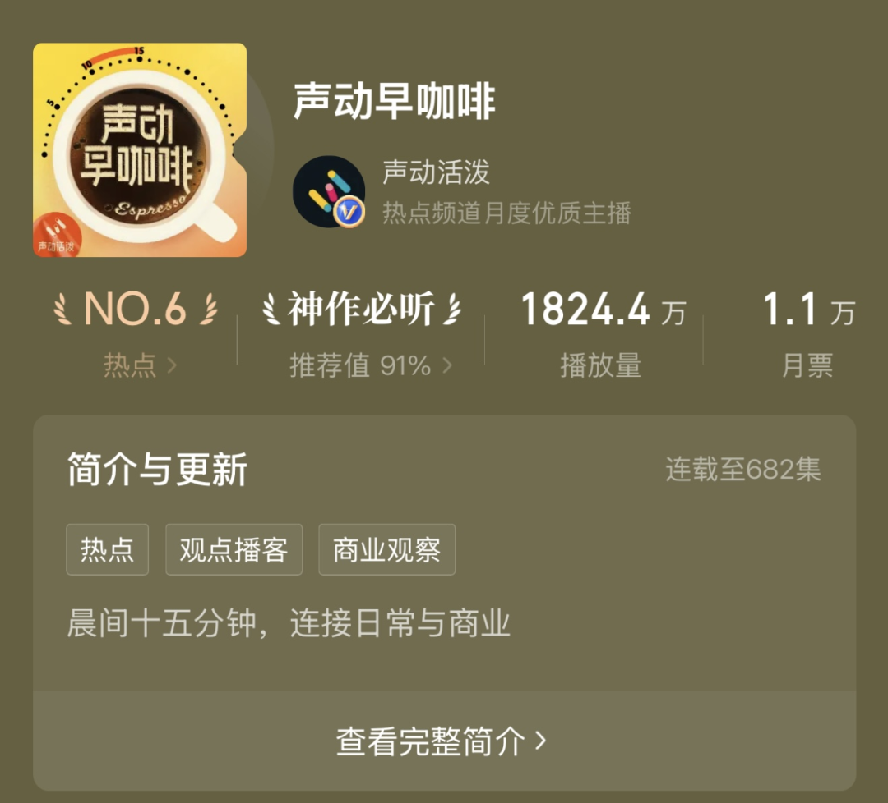
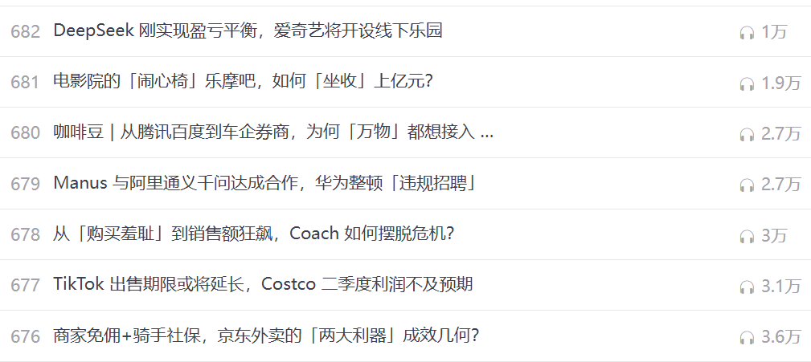

《声动早咖啡》以差异化的战略，在数字声场中打造出别具一格的品牌形象——既精准回应大众对信息交流的需求，又以持续创新和优质内容赢得市场认可。
在数字化时代，品牌的成长早已离不开网络土壤。播客作为一种数字广播形式，通过音频、广告或文字内容在网络上持续生长，听众可以订阅频道随时收听或下载内容。《声动早咖啡》这档受欢迎的播客节目，正是凭借互联网的力量，在内容竞争中塑造了强大的品牌力量。今天我们就来聊聊它是如何巧妙运用网络资源增强品牌影响力的。
品牌背景
《声动早咖啡》是由声动活泼出品的创新早间播客，通过15分钟的工作日晨间节目为听众提供与商业和科技相关的洞见。这档节目在苹果播客、喜马拉雅和小宇宙等平台累计播放量超过7000万次，且在所有平台上拥有135万订阅者，成为不少人清晨的“精神早餐”。

图1 喜马拉雅：声动早咖啡
声动活泼团队已打造《声东击西》《科技早知道》等8档原创播客，持续探索音频内容的可能性。他们像搭建知识便利店一样，把专业信息转化为轻松易懂的声音产品，让忙碌的都市人能在通勤路上完成 “碎片化学习”。这种将教育融入日常生活的模式，正在重塑数字时代的学习场景。
《声动早咖啡》的成功，在于把专业知识提炼成 “可听化的养分”。当其他播客追求信息密度时，它选择用故事化表达和生活化案例，将商业逻辑变成晨间的精神能量，满足听众对持续学习的需求，还将其打造成有效的品牌传播工具，成功地将教育与娱乐结合起来。
差异化策略
独特的内容和消费者的边际效用
播客作为一种新兴的数字媒介形态，正迅速扩大其听众基础，并且内容日益多元化。凭借精准的内容定位策略，《声动早咖啡》成功汇聚一大批高学历、高收入且忠诚度高的听众群体。这些听众对市场信息充满好奇，他们渴望获取新知，追求深入的分析与探讨，因此他们对播客的收听热情与频率始终居高不下。
在当下这个知识海量、信息泛滥的互联网时代，《声动早咖啡》积极整合全球商业科技领域的内容，打造一系列知识密集、信息量大的播客节目。这一内容策略直击听众的核心需求，同时高品质音频内容的提供，也为听众增添额外的价值享受。随着播客节目的持续推出与听众数量的稳步增长，这种附加价值的累积效应愈发凸显，不仅促进信息的交换和交流，也持续不断地吸引着新听众的加入，从而显著增加听众的边际效用。
成本结构与利润最大化
在快节奏的生活中，《声动早咖啡》适应了现代听众的生活方式，为听众提供一种便捷、易获取的信息消费方式。通过音频格式的内容传递，该播客大大降低听众的信息获取成本和制作者的分发成本。与其他媒体形式如视频制作或实体产品相比，音频播客的固定成本和变动成本相对较低。
《声动早咖啡》制作的主要成本包括录音设备、软件以及音频托管和域名注册的费用，这些是一次性固定支出。劳动力成本涵盖制作和管理播客所需的专业团队，如主持人、编辑和营销人员。优化团队结构和提升工作效率后，变动成本有望得到进一步削减。内容获取成本也已降至最低，因为互联网使得获取全球商业和技术趋势变得既容易又经济高效，从而减少内容创作所需的时间和资金投入。
图2 声动早咖啡团队
在追求最大化利润方面，《声动早咖啡》优先考虑创作深入、有见地的内容，以吸引听众并让他们持续收听。该节目将资源重新分配给有效的营销策略，包括社交媒体推广、战略伙伴关系和品牌赞助，这些策略可以进一步扩大听众基础并提升品牌知名度。
广告收入是播客的主要收入来源之一，《声动早咖啡》吸引高学历、高收入的听众群体，为广告商提供一个极具吸引力的平台。这一目标受众使广告商能够触及理想的市场细分，进而增加广告投放和收入。节目内容的质量和相关性在维持高收听率和参与度方面发挥着至关重要的作用，最终影响广告商的决策并促进播客的整体成功。
互动性强的社群建设与网络外部性
《声动早咖啡》通过多样化的互动方式，例如“咖啡豆”互动计划，鼓励未付费听众投稿分享他们对商业科技现象的见解，即丰富节目内容，也提高听众的参与度和节目的互动性。声动胡同会员计划为付费听众提供更深层次的互动体验，包括了解节目幕后故事的特权和与节目团队的直接交流机会。
图3 “咖啡豆”计划
作为社群的一部分，这些付费听众更倾向于主动推广节目，因为他们感到自己是节目成功的一部分，这种参与和推广行为是对其社群身份的肯定。节目团队构建一个共享价值观和文化认同的社群，将听众转变为品牌的积极参与者和传播者，体现知识付费模式下社群增强用户粘性和扩大影响力的核心理念。
播客节目凭借个人网络和口碑的传播优势，扩大其覆盖范围并增强听众参与度。鼓励听众在社交圈内分享与推荐，《声动早咖啡》借助信任与共同兴趣的力量，实现转化率的提升与听众忠诚度的增强。这种个性化的接触有助于加深节目与听众之间的联系，营造一种社区氛围，从而增强长期留存率。除了直接推荐外，《声动早咖啡》还受益于听众在小红书等社交媒体平台上的自发推广。听众在这些平台上分享个人感悟、节目亮点和独到见解，生成的内容吸引更多关注，提高节目的参与度和可见度。
《声动早咖啡》在微博、小红书和官方微信公众号等社交媒体平台的策略性互动，进一步展现其充满活力与动感的形象。这些平台使得内容能够快速传播，并与广大受众进行互动。社交媒体的网络外部性意味着每一次发帖或分享都有可能吸引新听众，进而扩大播客的覆盖范围和提升品牌知名度。在社区驱动的推广和社交媒体策略性参与的协同作用下，《声动早咖啡》不仅扩大听众基础，还巩固其在音频内容领域作为有影响力和可信赖的知识来源的地位。
显著性策略
品牌故事的塑造
《声动早咖啡》精心塑造的品牌故事，在听众心中成功建立一个独特的品牌形象。这一过程传递品牌的核心理念，增强品牌的文化深度和情感联结，还讲述着与声音、商业和科技相关的故事。该播客将内容无缝对接到听众的日常生活中，营造出一种超越单纯听觉享受的全方位体验。听众因此感受到超越期待的价值，从而与品牌建立更深层次的情感链接。
节目成为听众通勤时的理想伴侣，利用原本可能枯燥的通勤时间提供富有启发性的内容。事实上，《2021播客听众调研报告》也表明，收听播客的场景中，通勤的比例最高，占61.9%。这表明《声动早咖啡》在满足听众的特定场景需求方面做得非常成功，它的节目内容和发布时间与听众的日常活动完美契合，因而在竞争激烈的播客市场中占据了一席之地。
在发布频率上，该节目的定期和一致的播客发布日期对于品牌的塑造至关重要。《声动早咖啡》最初实行一周三更，随着团队的壮大，节目发展为工作日的每日更新。一致性和规律性让听众对节目充满期待，加深听众与节目之间的情感联结，进一步巩固品牌在听众心中的地位。
一致性的视觉和听觉标识
《声动早咖啡》精心设计的视觉与听觉元素，充分发挥播客媒介的独特性，有效强化其品牌形象。在视觉上，节目标识巧妙地将人们熟知的晨起喝咖啡的习惯与收听体验相结合，象征着一天的开始与思维的觉醒。标识中的计时器定格在15分钟，除了提示节目时长，还传递内容的精准和高效，让听众期待在短时间内获得充实信息。背景的夕阳色彩带来温暖和希望，与早晨的活力相呼应，营造出积极向上的氛围，强化节目与日常生活的紧密联系。
图4 声动早咖啡Logo
听觉上，《声动早咖啡》采用标志性的开场白“用声音碰撞世界”和“声动早咖啡与你轻松同步日常生活与商业世界”，为节目设定独特基调。这些表述强调节目作为日常生活与商业世界连接的桥梁作用，更是增强节目的辨识度。节目融入早晨的闹铃、起床、刷牙及准备出门的忙碌声，增添一层引人入胜的真实感。这种声音设计作为微妙的提示，形成一种条件反射般的联系，使听众在每天的同一时间对节目充满期待。
播客媒介特性的运用促使《声动早咖啡》在广阔的播客领域中成功开辟了自己的空间。通过建立一致性和辨识度，巩固其在听众心中的独特地位，并增强品牌的长期影响力。这些策略的综合运用，使得《声动早咖啡》不仅是一个播客节目，更是生活方式的象征，与听众的日常生活紧密相连。
规模经济与学习效应
声动活泼出品的多元化内容实现规模经济，覆盖商业、科技等多个领域，成功吸引具有不同兴趣的听众。内容多样化策略丰富节目本身，吸引更广泛的听众群体，增加节目的吸引力和市场覆盖面。多样化的内容也降低内容制作的平均成本，因为共享的制作资源和团队专长可以被更高效地利用。

图5 多元化的内容
随着节目制作经验的积累，团队在内容创作、听众互动和市场营销等方面的能力不断提升。这种经验的增长使得团队能够更高效地生产高质量内容，实现学习效应。学习效应在这里体现为每期节目后团队对听众反馈的快速响应、内容制作的改进和创新尝试，以及对市场趋势的敏锐把握。
例如，在特朗普再次当选美国总统后，节目迅速引入这一政治变革对商业科技领域的影响，特别是对马斯克和特斯拉的最新商业动态和科技进展进行深入的分析。节目构建一个促进品牌正向发展的闭环，显著增强节目的市场号召力与影响力，生动诠释品牌建设中规模效益与学习曲线的实际效益。
结语
在数字化浪潮奔涌的今天，品牌早已超越单向的价值传递，转而深耕情感共鸣，调动受众深度参与。《声动早咖啡》以差异化的战略，在数字声场中打造出别具一格的品牌形象——既精准回应大众对信息交流的需求，又以持续创新和优质内容赢得市场认可。当播客行业不断演进，这档节目正稳步跻身行业灯塔之列，为媒体创新与品牌建设绘制着充满想象力的新蓝图。
图6 声动早咖啡：日常有你
参考文献
[^1]声动活泼[EB/OL].(2023). https://www.shengfm.cn/podcastslist/sheng-dong-zao-ka-pei.
[^2]Rahmia ,Zhahra ,N. H , et al.Development of podcasts as educational media based on local wisdom[J].Journal of Physics: Conference Series,2021,1760(1):1-5.
[^3]张博.播客正快速占领用户媒体使用时长[N].中国新闻出版广电报,2024-07-29(008).
[^4]李明辉,杜康,武江民,等.年轻人热捧中文播客强劲“翻红”[N].经济参考报,2024-06-07(008).
[^5]Nate S. Fisher.But First, A Word from Our Sponsor: Engagement with Podcasts and their Advertising[J]. Southwestern Mass Communication Journal, 2024-10-12,40(1):3-4.
[^6]徐涛.支持我们，加入新一年的播客创新[EB/OL].(2023-12-05). https://mp.weixin.qq.com/s/vPl0a6EKPQkDZVmY7KgM-w. [7] 卢尧选.知识社群：知识付费的内容生产与社群运作——以罗辑思维社群为例[J].中国青年研究,2020,(10):12-20.
[^8]公社发言人.到底谁在听播客？2021听众调研报告发布[EB/OL].(2021-03-22).https://mp.weixin.qq.com/s/3Scz2BYhYBnJbr3buxy4Zg.
[^9]Boysen Y .Easily Create an Affordable Podcast[J].Nonprofit Communications Report,2019,17(12):3-3.
[^10]李倩.中文播客的兴起、特征、意义及问题[J].新媒体研究,2023,9(10):73-74.
[^11]Henten ,Anders,Godoe , et al.Demand side economies of scope in bundled communication services[J].Info : the Journal of Policy, Regulation and Strategy for Telecommunications, Information and Media,2010,12(1):27-30.